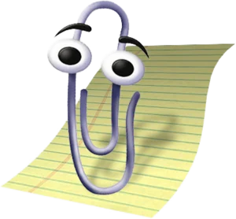

Built from scratch using HTML, CSS, and JavaScript. The Windows 98 theme is a nod to my first computer growing up. No third party website builders, no drag and drop tools. Just real code, a foundation I built at Temple University, and a lot of personality!
The situation: Inherited an environment with one Mac and a handful of old Apple policies in Intune, but nothing was actually in use. The pieces were there, but none of it was set up in a way that would scale or hold up to a second device, let alone a fleet.
The call I made: Rather than try to patch what was there, I scrapped it and rebuilt the setup from the ground up. It was faster, cleaner, and gave me a foundation I could actually trust as more Macs got added.
What I built:
- Recovered Apple Business Manager access and reconnected it to Intune
- Configured Automated Device Enrollment so new Macs auto-enroll when they connect to Wi-Fi
- Set up SSO through Microsoft Entra via Company Portal so users authenticate with their company identity
- Wrote configuration profiles and compliance policies sized to a small but growing Mac footprint
How onboarding works now: When a new Mac powers on, it auto-enrolls into Intune through ABM. I use LAPS to provision a local account with a temporary password and hand that off to the user. They sign in once, open Company Portal, and authenticate with their Entra SSO credentials. From there, their Mac is tied to their company identity and they're ready to work.
Where it stands: The Mac footprint is up to 2 devices, both managed end-to-end through Intune with Entra SSO. The flow is repeatable, documented, and ready to scale.
What's next: I'm researching Platform SSO with the new "Enable Registration During Setup" toggle (released in Intune in May 2026) to compress the initial local-account handoff into something even smoother. The goal is zero-touch from box to desktop.

It looks like Alexis is cooking up more projects!
Want to check back later, or get in touch?
